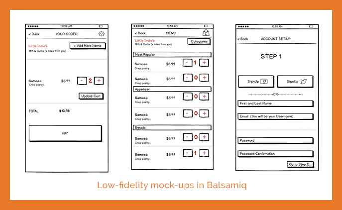
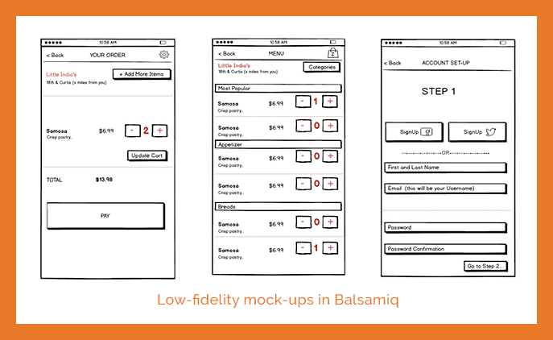

Denver Food Truck Finder

Bloc project to design iOS product with speical consideration to intuitiveness, flow, and usabilty.
Illustrator / Sketch / Balsamiq / InVision / Peek User Testing


PROJECT APPROACH
Exploring similar sites for inspiration gave me a quick jump on identifying key functionality for search categories, order flow and mapping options. The creation of a Site Map crystalized how the defined functionality would link together.
One of the primary goals was to keep the interface intuitive. So, the name Denver Food Truck Finder and a quickly identifable image for the logo helped keep it simple. The color palette and images utilized are fun and energetic while the font is straight forward.
The low-fidelity wireframes in Balsamiq, were imparitive as text size, spacing, button size, and integration of all functionality, such as adjusting order quantity, was a lot of detail to nicely fit on a mobile application. This was also the time to ensure that ease of use necessities like location priming and consistancy in navigation were well incorporated.

 

PROJECT FOCUS
With so many clicks and choices the user would want to make, the visual design had to be intuitive and not overwhelming. Bringing the design alive in Sketch with hi-fidelity wireframes showcased the crisp product that could be created with design consistancy and navigation ease.
Breaking the work flows down into small user stories helped focus on capturing the details of functionality as well as ensure a visually compelling reason to remain engaged with the app. From landing page, location and category searching, exploring menu options, ordering, paying, account set-up, order confirmation and walking directions, every possible outcome was anticipated.
Throughout the app the user experience was always being evaluated; like the small design details of anticipating a user's change of mind. Watching users interact with the app by utilizing Peek User Testing gave way to a number of iterations to refine the experience.

PROJECT RESULTS
...makes it special...